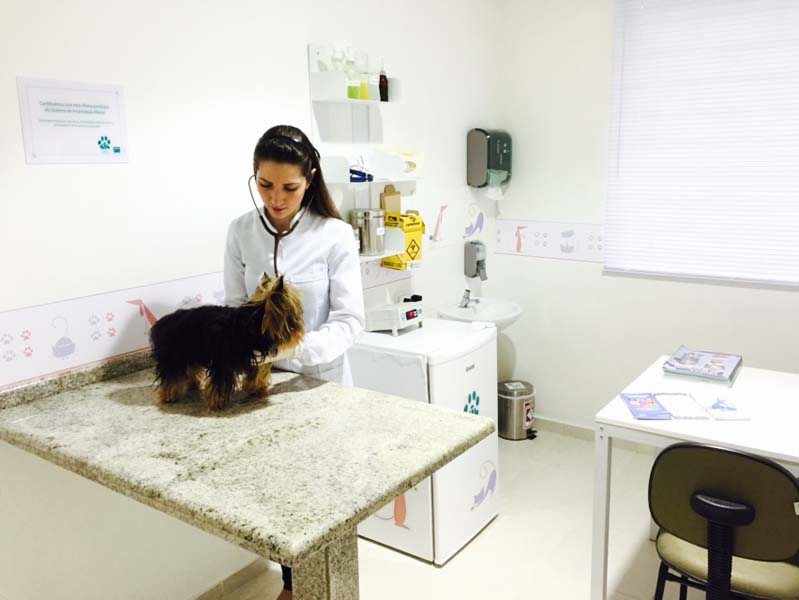

AGORA
Pronto atendimento 24h
Sinais súbitos, acidentes ou qualquer mudança que preocupe você — a qualquer hora, todos os dias. Ligue para receber orientação e venha à clínica quando indicado.
Ligar sobre uma urgênciaPlantão veterinário 24 horas · todos os dias, inclusive domingos e feriados
A Da Vinci cuida de cães e gatos em Curitiba de dia ou de madrugada. Se algo mudou no seu pet agora, ligue — não espere para decidir sozinho.
Um caminho para cada necessidade
Sinais súbitos, acidentes ou qualquer mudança que preocupe você — a qualquer hora, todos os dias. Ligue para receber orientação e venha à clínica quando indicado.
Ligar sobre uma urgênciaAcompanhamento com calma e continuidade em 13 especialidades.
Seis frentes cirúrgicas conduzidas por profissionais qualificados.
Salas climatizadas para pacientes que precisam permanecer sob observação da equipe 24 horas por dia.
Consultas, diagnóstico por imagem, exames, vacinação e microchipagem em um só lugar.
Ambiente controlado exclusivo para vacinação.
Serviço de transporte para quem não pode trazer o pet até a clínica.

Estrutura própria e equipe responsável
Consultórios equipados, farmácia própria, internamento e isolamento climatizados, além de estacionamento próprio e monitoração por câmeras — tudo no mesmo endereço, no bairro São Francisco.
Fluxo separado do plantão de emergência
Ambiente climatizado para manter a beleza e a higiene do seu pet, em um fluxo de agendamento próprio — sem disputar espaço com o atendimento de urgência.
Presença local, decisão mais segura
A Da Vinci está no bairro São Francisco e reúne pronto atendimento, consultas, especialidades, cirurgias e internação em um endereço conhecido por tutores de Curitiba.
Atendimento 24 horas para cães e gatos em Curitiba, com especialistas e estrutura própria.
Chegue até nós
Em uma emergência, ligue antes de sair para confirmar a melhor orientação da equipe. Estacionamento próprio no local.